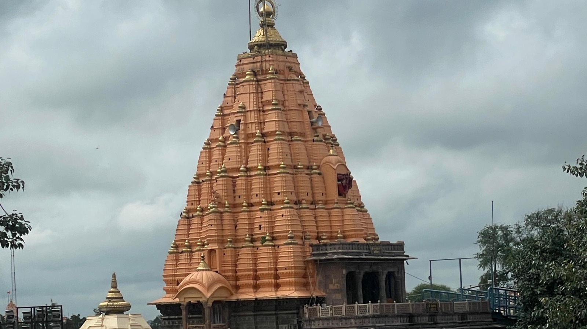

Ujjain has its own railway station but no airport of its own, which trips up first-time visitors. Here's the honest version of each route, and roughly what it costs you in time.
The nearest airport is Devi Ahilyabai Holkar Airport in Indore (IDR), about 55 km away, with direct flights from Delhi, Mumbai, Pune, Hyderabad, Jaipur and Bhopal. There is no airport at Ujjain itself.
From the airport, the drive to Ujjain takes around an hour by taxi. You can also head to Indore Junction and take a train onward — there are trains running between Indore and Ujjain through the day, and it is a short hop. For most families arriving with luggage, a pre-booked cab straight from the airport is the least painful option.
Ujjain Junction (UJN) is a major stop on the Western Railway network, with direct trains from Delhi, Mumbai, Ahmedabad, Bhopal, Jaipur and much of central India. For most pilgrims this is the simplest way in — you arrive in the city itself rather than an hour outside it.
The station sits about 2 km from the city centre, so you are a short auto or cab ride from most places you'd want to be, including us.
Plenty of trains reach Ujjain at awkward hours, and this catches people out — particularly those planning to go straight to a 4 AM Bhasma Aarti. If your train lands at 3 AM, tell your host in advance rather than assuming someone will be awake. We've had guests arrive on early trains and it is entirely manageable when we know it's coming; one guest thanked us for answering at dawn when they were stuck without a room.
Ujjain is well connected by road to Indore, Bhopal and the rest of Madhya Pradesh. Buses run frequently from Indore — a longer ride than the car at roughly two hours, but cheap and regular. Driving yourself from Indore is about an hour on a good road.
If you're driving, parking is worth checking before you book anywhere. We have free parking on the premises, which is not a given in the streets nearer the temple.
Rapido, Uber and Ola all operate in Ujjain, and Rapido is usually the quickest to find for short hops. Autos are plentiful, and there are local auto and cab stands close to us for the hours when apps get thin. The temple is a short drive from our flats — guests put it at about 10–15 minutes.
We're at Sunrise City, 55, Behind Anjushree Hotel, Ujjain, MP 456010. Anjushree Hotel is the landmark to give an auto or cab driver — it's better known locally than the address itself.
Open the location in Google Maps →
If you're circling and can't find it, call — it is faster than another lap of the block.
Five furnished flats with kitchens and free parking, a short drive from Mahakaleshwar Temple.